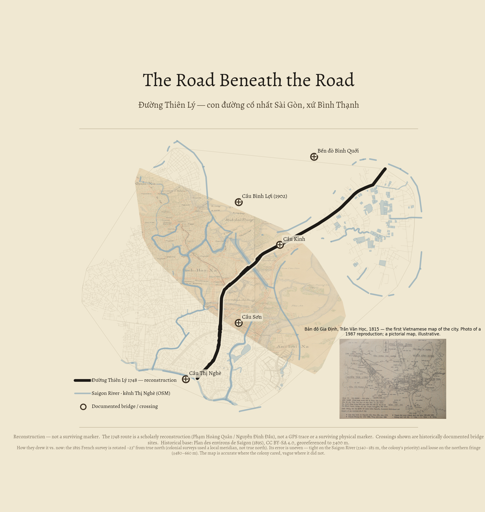

The Road Beneath the Road
Đường Thiên Lý — con đường cổ nhất Sài Gòn, xứ Bình Thạnh
Every day you ride a road that is 277 years old. You just don't know it.

You ride it every day
If you live in Bình Thạnh and travel toward District 1 along Xô Viết Nghệ Tĩnh, or wind out to the Thanh Đa peninsula along đường Bình Quới, you are following a road that was surveyed in 1748 — during the reign of the Nguyễn lords, more than a century before the French arrived.
The imperial road had a name: Đường Thiên Lý — the "thousand-li road," Vietnam's north–south spine. Its northern Saigon branch ran through what is now our district, stitching together river crossings at Thị Nghè, Cầu Sơn, and Cầu Kinh before reaching the Saigon River at the old Bình Quới ferry.
The road is still there. It just wears different names now.
1748: the year the road was built
The Đường Thiên Lý — also called Đường Cái Quan, the Mandarin Road — is Vietnam's ancient imperial spine. Its roots trace to the Hồ dynasty (1402) and the Lê expansion (1471) into Champa; under the Nguyễn dynasty it was completed as a national road from Ải Nam Quan all the way south to Hà Tiên (not Cà Mau — the Cà Mau extension is a 20th-century addition). [Tạp chí Đông Nam Á]
Two branches radiated outward from the old thành Gia Định citadel. The western branch was built in 1815 under tổng trấn Lê Văn Duyệt, ordered as the "road to Cambodia" — and that is the branch now called Cách Mạng Tháng Tám, running through Districts 3 and 10 toward Bảy Hiền. [VnExpress]
A common mistake: the "Mandarin Road = Cách Mạng Tháng Tám" story that circulates in Saigon historical writing refers to that western, 1815 branch — it does not touch Bình Thạnh. Our district's road is the older, northern branch, built in 1748 under quan Điều khiển Nguyễn Hữu Doãn during a Cambodian border alarm.
Per the reconstruction by Phạm Hoàng Quân (citing the Gia Định thành thông chí ~1806–1820 and Hoàng Việt nhứt thống dư địa chí (nhứt in the older Southern orthography; 1806), the northern route left the lost NE gate of the old citadel (roughly today's TV station / Đài Truyền Hình) and ran:
Xô Viết Nghệ Tĩnh → cầu Thị Nghè → cầu Sơn → cầu Kinh → đường Bình Quới → phà Bình Quới (Saigon River) → toward núi Châu Thới (Biên Hòa) and Mô Xoài (Bà Rịa).
Phạm Hoàng Quân calls the Bình Quới stretch "di tích giao thông số 1 của Sài Gòn, từ năm 1748" — Saigon's traffic-heritage site #1, and the forgotten opening segment of the northern route. [Tuổi Trẻ Cuối Tuần]
The name-stack: seven governments, three streets
The roads that carry the Thiên Lý alignment today were renamed by every government that held the city. Each era painted over the last name; the asphalt remembers nothing.
Điện Biên Phủ
Under French colonial rule the street was named after a colonial figure: Legrand de la Liraye. Locals, unimpressed, continued to call it "đường đi Gò Vấp" — the road to Gò Vấp — a name that needed no decree. The Republic of Vietnam renamed it Phan Thanh Giản. On 14 August 1975, three and a half months after reunification, the revolutionary government renamed it again: Điện Biên Phủ, after the 1954 battle that ended French rule. [vi.wikipedia] The road runs from the edge of Bình Thạnh through Districts 10 and 3, ending at cầu Sài Gòn (cầu Tân Cảng) at the district's eastern boundary.
Nguyễn Hữu Cảnh
Honesty gate: Nguyễn Hữu Cảnh street was NEVER called Điện Biên Phủ. It terminates at Điện Biên Phủ — they meet at a junction, they are not the same road.
Before 1998 it was called Lê Thánh Tôn nối dài — an extension of Lê Thánh Tôn from District 1 pushed outward. In 1998, to mark the 300th anniversary of Saigon's formal founding, the city renamed a string of streets after the Nguyễn lord and general Nguyễn Hữu Cảnh — the man who is credited with formally establishing Gia Định province in 1698. The road itself only opened to traffic in 2002. [vi.wikipedia]
Xô Viết Nghệ Tĩnh
This is the artery that most directly inherits the 1748 alignment through Bình Thạnh, carrying the route from Thị Nghè up past Cầu Sơn. Its pre-1975 colonial and Republic of Vietnam names are not recorded in the sources consulted for this article. The Wikipedia article for this street (Bình Thạnh district) returned a 404, and a targeted search of Saigon street-naming sources did not surface the earlier names within the research budget. If you know the pre-1975 name, the sources section below lists where to look. The post-1975 name — Xô Viết Nghệ Tĩnh, honouring the 1930–31 Soviet uprising in Nghệ Tĩnh province — was part of the same wave of revolutionary renamings as Điện Biên Phủ.
The bridges: four crossings on one ancient road
A road is only as durable as its river crossings. The northern Thiên Lý route needed four: cầu Thị Nghè, cầu Sơn, cầu Kinh, and finally the Saigon River itself — crossed at the Bình Quới ferry, and later by a bridge that became a landmark of its own.
Cầu Bình Lợi, built in 1902 by the French engineering firm Levallois-Perret, was the first permanent bridge across the Saigon River. [vi.wikipedia] For more than a century its steel spans carried both road and rail. The new BOT bridge opened on 14 September 2019, replacing it for motor traffic. The two old steel spans and the watchtower beside the tracks were preserved — a rare piece of colonial industrial heritage kept in place rather than demolished.
The intermediate crossings — Thị Nghè, Cầu Sơn, Cầu Kinh — are canal bridges inside the district, each stitching the old route across the network of waterways that once made Gia Định as much a city of water as of roads. [PLO]
Three fates of one road
The three segments that carry the 1748 alignment have had radically different lives in the decades since reunification.
The oldest still works
Xô Viết Nghệ Tĩnh — the main artery, the direct inheritor of the 1748 route — functions largely as it always has: a through-road, busy, unremarkable to those who don't know what they are riding. Historian Nguyễn Đình Đầu called it "one of the oldest roads of Saigon." [Tuổi Trẻ]
The newest became the city's flood navel
Nguyễn Hữu Cảnh — only opened in 2002, renamed in 1998 — became infamous almost immediately as HCMC's "rốn ngập": the flood navel of the city. Built on low-lying riverside land, the road subsided by up to 1.2 metres over its first two decades, turning into a river itself after heavy rain. [vi.wikipedia] A 473-billion-đồng raising project ran from 2019 to 2021, completed on 30 April 2021, lifting the road surface to bring it back above the flood line. Whether the fix holds through the next decade of subsidence is an open question.
The peninsula end was frozen for thirty years
At the far end of đường Bình Quới, the Thanh Đa / Bình Quới peninsula — where the old Thiên Lý route reached the Saigon River — was frozen by a city development plan approved in 1992. The plan designated roughly 406 hectares as an "ecological tourism zone," a grand scheme that attracted little investment and no construction for more than three decades. Locals called it a quy hoạch treo — a "suspended plan" — and a dark joke circulated that three generations of the same family had been unable to renovate or sell their homes: grandfather, father, grandchild all living under the same frozen zoning decree.
On 14 November 2025, the city finally put the zone to investor bidding. Whether the new development will honour the riverbank character or replace it is, as of this writing, unknown. (per VnExpress reporting)
The scholarly reconstruction: sources and limits
The 1748 northern Thiên Lý route through Bình Thạnh is a scholarly reconstruction, not a confirmed physical marker. The reconstruction rests on two Nguyễn-dynasty gazetteers:
- Gia Định thành thông chí (c. 1820), compiled by Trịnh Hoài Đức — the primary geographical record of early 19th-century Gia Định province, describing roads, rivers, and administrative divisions.
- Hoàng Việt nhất thống dư địa chí (1806), an imperial geographical survey of all Nguyễn territories that includes road itineraries through the South.
From these sources, historian Nguyễn Đình Đầu and cartography researcher Phạm Hoàng Quân independently traced the alignment (Xô Viết Nghệ Tĩnh → đường Bình Quới) as the modern street-level expression of the northern route. The modern alignment is their reconstruction — no physical marker or archival map pins the 1748 road to today's street grid with certainty.
Then vs now: the road you ride today is older than the map it sits on. The Plan des environs de Saïgon was surveyed by French colonial engineers in 1895 — a century and a half after the Thiên Lý route was first recorded in 1748. The 1895 survey is the oldest georeferenced base available for this district (measured accuracy ±~400 m). The inset shows the Bản đồ Gia Định (1815) by Trần Văn Học — the oldest known Vietnamese map of the city, drawn forty-seven years before any French survey of the area, pictorial rather than a geodetic survey. The route predates both maps; the maps are the best ground we have.
What survives, what's forgotten
The 1748 northern Thiên Lý route through Bình Thạnh is not a monument. There is no plaque on Xô Viết Nghệ Tĩnh that says "here stood the old Mandarin Road." The route lives only in scholarship — in the pages of the Gia Định thành thông chí, in the work of Nguyễn Đình Đầu and Phạm Hoàng Quân — and in the geometry of the streets themselves, which have followed the same line for 277 years because geography, not decree, demanded it.
What we know with confidence: the route ran from Thị Nghè through Cầu Sơn and Cầu Kinh to the Bình Quới ferry. What we don't know: the colonial and Republic of Vietnam name of Xô Viết Nghệ Tĩnh, and how much of the alignment below the surface exactly matches the Nguyễn-era road versus a later colonial regrading.
The Bình Quới stretch — Phạm Hoàng Quân's "forgotten segment" — is the most honest survival. It is still a riverside road to a ferry crossing, slightly removed from the city's intensity, not yet fully absorbed into the development that surrounds it. Whether the 2025 bidding changes that is the question the peninsula now carries.
The road beneath the road is still there. You just have to know where to look.